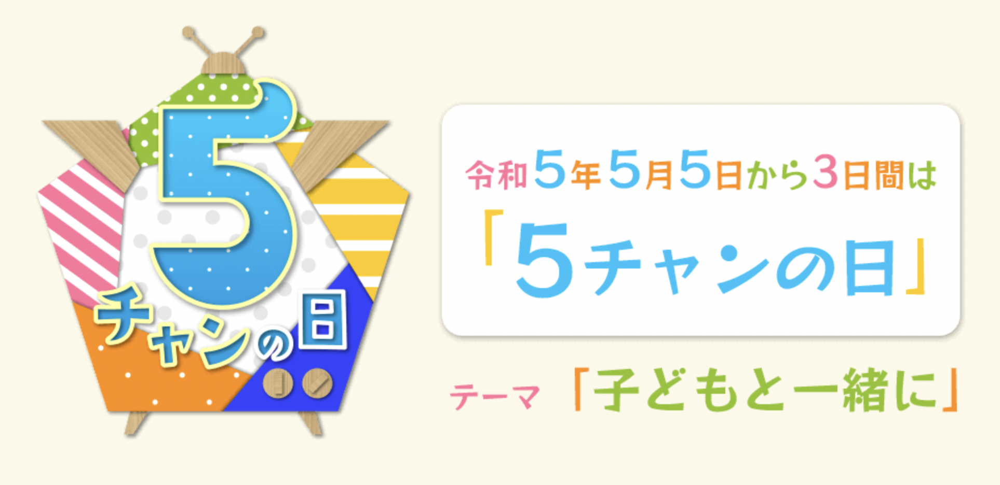

EXPERIENCE
Time Line
-
2022/04/01
愛知工業大学 入学
情報科学部,情報科学科,メディア情報専攻
-
06/17
"令和４年度食品ロス削減月間ポスターデザイン案"に作品投稿

-
09/03
-
10/29
"ゲームマーケット"に参加,作品展示
ステッパーを用いた室内運動を可能とするインタラクティブコンテンツを作成展示した。
ゲームマーケット リンク -
11/15
-
2023/05/06
-
06/25
"ASSETS 2023 SIGGRAPH"に作品投稿
ステッパーとシルバーカーを使った、フレイル予防対策につながるインタラクティブコンテンツを投稿
ASSETS 2023 SIGGRAPH リンクRead more
-
06/08
TOKYO GAME SHOW 2022
| 概要 | ステッパーを用いたインタラクティブゲームコンテンツを作成展示 |
|---|---|
| 技術 | C++とOpenGLを用いたゲーム画面の実装 M5StickやKinectのセンサから動きを取得 |
| 体験 | 外国の方や子供から大人まで様々な人に私たちのゲームで遊んでもらいました。 ゲームを今の自分でも一から作ることができるということ体感できました。 |
| 学び | 様々なセンサーなどハードウェアにも触れたことで、アプリ内の世界だけでなく、現実世界の動きをどのようにサイバー空間へ反映させるか、プログラミングだけじゃない根本的なモノづくりに触れられたと感じています。 |
| 記事 | 記事のリンク 「ユニティ・テクノロジーズ・ジャパン株式会社」 |
WINF
| 概要 | ステッパーを用いたインタラクティブゲームコンテンツを運動不足の改善と関連付け、研究をした |
|---|---|
| 体験 | 大学1年生で初めての学会発表をしました。 |
| 学び | 他の人の発表も見学し、どのような話し方や質問の受け答え方が聞きやすいのかなど「発表」と言う面でも得るものがありました。 |
| ※（左）実際に利用した発表スライドです |
5チャンの日

| 概要 | タブレットに書いた自分のイラストを大きなプロジェクターに映すことができ、インタラクティブに自分のイラストを操作できるコンテンツの展示 |
|---|---|
| 記事 | 記事のリンク 「株式会社CBCテレビ」 |
ASSETS 2023 SIGGRAPH/情報処理学会DCC研究会
| 概要 | ステッパーを用いたインタラクティブゲームコンテンツをフレイル予防コンテンツとして改良し発表、投稿した。 ステッパーの動きに合わせて、映像を変化させ映像中の外の世界を擬似的に散歩をすることができる → フレイル予防として身体の健康を目的とする。 またステッパーを用いて外を散歩できるまで回復すると、次にカメラとGPSがついたカートで外を散歩してもらう、その時取得できる映像素材をコンテンツの映像素材とし制作者側の体験をしてもらうよって、フレイル予防として心の健康改善も目指す |
|---|---|
| 学び | GPSデータの取り扱い方について学びました。 ゲームコンテンツからフレイル予防という社会問題に自分も貢献できたことで、開発やもの作り、社会貢献と言う言葉を身近に感じれるようになりました。 「サイバー空間だからこそできること」へ、意識を向けられるようになりました。 |
| ※（左）実際に利用した発表スライドです |